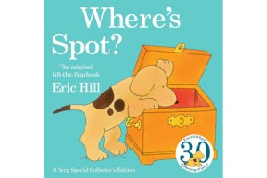

{kind=link}
 [/caption]
[/caption][caption id=”attachment_2346” align=”alignright” width=”300” caption=”Spot before”] 
[caption id=”attachment_2347” align=”alignright” width=”262” caption=”Spot after”][/caption]
We all know what a children’s illustration looks like right? Sort of in-between Dr Seuss and the Gruffalo, maybe with a bit of Spot thrown in. What I want to know is why in all of the test groups I have done over the last few weeks the most vector/cartoon style stuff is more popular with kids (both boys and girls) from the ages of 8 to the ages of 12?
Spot is a good example of an illustrator moving their illustrations towards what we have found is a “preferred style of art” amongst Primary School age children.
The objects have become simplified and the “stroke” effect has been used with a greater thickness.
I can only assume that cartoon channels such as Nickelodeon & The Cartoon network have changed the style of art that the children I spoke to enjoyed. I know this is all very speculative and I am making some big assumptions but the evidence I have found whilst trying to find the correct illustrator for Safe Search has shown me that kids prefer vector based art as opposed to hand drawn objects..
Well it means that in the future we will try to keep our art more vector based, we will hire graphic designers/artists instead of illustrators. There is a place for illustration and I’m sure if they are done right they can look great however I can be confident in saying that Primary Technology will be sticking to the style we have used in the past as it seems to be a winning formula(despite the fact I tried to break it). Please don’t take this post as factual, it is not scientific. It is my opinion based on my experiences of a small(handful) of children in only a few schools.